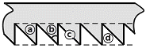

산림기능사 (2012-07-22 기출문제)
1과목: 조림 및 육림기술
1. 산벌작업에서 임지의 종자가 충분히 결실한 해에 종자가 완전히 성숙된 후, 벌채하여 지면에 종자를 다량 낙하시켜 일제히 발아시키기 위한 벌채 작업은?
- 예비벌
- 하종벌
- 후벌
- 종벌
(정답률: 65%)

2. 잡목솎아내기 방법으로 잘못 설명한 것은?
- 천연생의 불필요한 나무를 제거한다.
- 조림목 중에서 형질이 불량한 나무를 제거한다.
- 형질이 우량한 자생 참나무, 자작나무, 피나무도 제거한다.
- 우량목이 없거나 덩굴식물로 덮여 있으면 모두 베어내고 인공 조림한다.
(정답률: 82%)
3. 인공림에 비하여 천연림이 유리한 점은?
- 수종갱신이 용이하다.
- 생태적으로 안전하다.
- 생육이 고르고 안전하다.
- 벌기를 앞당길 수 있다.
(정답률: 81%)
4. 덩굴식물에 속하지 않는 것은?
- 칡
- 머루
- 다래
- 싸리
(정답률: 88%)
5. 다음 중 식재 밀도에 대한 설명으로 옳지 않은 것은?
- 밀식조림이란 1ha당 5000주 이상 식재한 것을 뜻한다.
- 소나무는 밀식하면 수고와 지하고가 높아진다.
- 일반적으로 양수는 밀식하고 음수는 소식한다.
- 지력이 다소 낮은 곳에서는 밀식하여 지력유지를 위해 노력하는 것이 좋다.
(정답률: 57%)
6. 임목을 생산 벌채하고, 이용하고, 또 그곳에 새로운 숲을 조성하는 작업체계를 기술적으로 무엇이라 하는가?
- 무육작업
- 산림작업종
- 제벌작업
- 임목개량
(정답률: 59%)
7. 일반적인 낙엽활엽수를 봄에 접목하고자 한다. 접수를 접목하기 2~4주일 전에 따서 2주 정도 저장할 때 가장 적합한 온도는?
- - 5℃정도
- 5℃정도
- 15℃정도
- 20℃정도
(정답률: 69%)
8. 택벌림의 장점으로 볼 수 없는 것은?
- 면적이 작은 숲에서 보속생산을 하는데 적당하다.
- 임지와 어린나무가 보호를 받는다.
- 숲의 심미적 가치가 높다.
- 양수의 갱신에 적합하다.
(정답률: 70%)
9. 바닷가에 주로 심는 나무로서 적합한 것은?
- 곰솔
- 소나무
- 잣나무
- 낙엽송
(정답률: 90%)
10. 우리나라 토성구분에 대한 설명으로 잘못된 것은?
- 사질토 : 모래를 50% 이상 함유
- 양질사토 : 미사와 점토가 25% 정도 함유
- 양질점토 : 점토가 45~65% 정도 함유
- 점토 : 점토가 65% 이상 함유
(정답률: 54%)
11. 이듬해 춘기까지 저장하기 어려운 수종으로 종자의 발아력이 상실되지 않도록 7월에 채종하면 즉시 파종해야 되는 수종은?
- 버드나무
- 벚나무
- 회양목
- 잣나무
(정답률: 71%)
12. 수목의 종자번식과 비교한 무성번식의 특성에 관한 설명으로 틀린 것은?
- 종자 번식에 비해 기술이 필요하다.
- 좋은 형질의 어미나무를 확보하여야 한다.
- 접목묘는 개화 결실이 늦어진다.
- 실생묘에 비해 대량 생산이 어렵다.
(정답률: 65%)
13. 다음 중 삽목 시 발근이 잘되는 수종으로만 짝지어진 것은?
- 이팝나무, 소나무
- 포플러류, 사철나무
- 두릅나무, 백합나무
- 물푸레나무, 오리나무
(정답률: 75%)
14. 제벌작업은 임목의 생리상 어느 계절에 하는 것이 가장 좋은가?
- 초봄
- 여름
- 늦가을
- 겨울
(정답률: 67%)
15. 다음 중 가지치기 방법으로 옳은 것은?
- 가지치기는 수종 및 경영목적에 따라 결정되어야 한다.
- 가지치기 시기는 수목의 생장이 왕성한 여름에 실시한다.
- 활엽수는 지융부를 제거한다.
- 절단부가 융합이 늦어도 관계없으므로 굵은 가지는 제거해도 된다.
(정답률: 77%)
16. 낙엽송(묘령 2년)의 곤포당 본수는?
- 100
- 200
- 500
- 1000
(정답률: 49%)
17. 용기묘(pot seeding)에 대한 설명으로 틀린 것은?
- 제초작업이 생략될 수 있다.
- 묘포의 적지조건, 식재 시기 등이 큰 문제가 되지 않는다.
- 묘목의 생산비용이 많이 들고 관수 시설이 필요하다.
- 운반이 용이하여 운반비용이 매우 적게 든다.
(정답률: 76%)
18. 다음 중 교목(또는 고목)에 해당하는 수종은?
- 개나리
- 회양목
- 소나무
- 반송
(정답률: 76%)
19. 다음 중 묘령의 표시에 대한 설명이 맞지 않는 것은?
- 2 - 0묘 : 상체된 일이 없는 2년생 묘
- 1 - 1묘 : 파종상에서 1년이 경과된 후 한 번 상체되어 1년에 지난 묘
- 1/2묘 : 삽목 후 반년(6개월)이 경과한 묘
- 1/1묘 : 뿌리의 나이가 1년 줄기의 나이가 1년인 묘
(정답률: 83%)
20. 다음 중 개벌작업의 장점에 해당되는 것은?
- 재해에 대한 저항성이 증대된다.
- 지력유지 및 치수보호상 유리하다.
- 풍치유지 및 수원함양기능이 증대된다.
- 생산재의 품질이 균일하고 벌목작업이 단순하다.
(정답률: 81%)
21. 풀베기를 끝낸 후 조림지에서 칡이나 머루 등의 식물을 제거하는 작업은?
- 간벌
- 제벌
- 가지치기
- 덩굴치기
(정답률: 91%)
22. 산벌작업 중 어린 나무의 높이가 1~2m 가량이 되면 후계목의 생육을 촉진시키기 위해 상층에 있는 나무를 모조리 베어 버리는 작업은?
- 예비벌
- 하종벌
- 수광벌
- 후벌
(정답률: 48%)
23. 제벌을 설명한 것 중 틀린 것은?
- 조림지의 경우 쓸모없는 침입수종을 제거한다.
- 임분 전체의 형질을 향상시키는데 목적이 있다.
- 수관간의 경쟁이 시작되는 시점에 실시한다.
- 임상을 정비하여 불량목과 불량품종을 다 제거하여 간벌작업이 필요 없게 된다.
(정답률: 73%)
24. 우리나라 산지에서 수목에 가장 피해를 많이 주는 덩굴식물은?
- 머루덩굴
- 칡덩굴
- 다래덩굴
- 담쟁이덩굴
(정답률: 91%)
25. 토양의 단면도를 보았을 때 위쪽에서 아래쪽으로의 순서가 맞게 배열된 것은?
- 표토층 → 모재층 → 심토층 → 유기물층
- 표토층 → 유기물층 → 심토층 → 모재층
- 유기물층 → 표토층 → 심토층 → 모재층
- 유기물층 → 표토층 → 모재층 → 심토층
(정답률: 71%)
2과목: 산림보호
26. 산불에 관한 설명 중 틀린 것은?(오류 신고가 접수된 문제입니다. 반드시 정답과 해설을 확인하시기 바랍니다.)
- 일반적으로 활엽수는 침엽수에 비해 피해가 심하다.
- 교림은 왜림보다 피해가 적다.
- 혼효림은 단순림보다 피해가 적다.
- 유령림보다는 노령림의 피해가 크다.
(정답률: 34%)
27. 다음은 선충에 대한 설명이다. 틀린 것은?
- 대체로 실같이 가늘고 긴 모양을 하고 있다.
- 식물기생선충은 몸길이가 평균 1㎜내외이다.
- 주로 식물의 뿌리를 물어 뜯어먹어 가해한다.
- 선충에 의한 수병으로는 침엽수의 묘목의 뿌리썩이 선충병이 있다.
(정답률: 61%)
28. 토양 중에서 수분이 부족하여 생기는 피해는?
- 볕데기
- 상해
- 한해
- 열사
(정답률: 63%)
29. 산림화재의 위험도를 좌우하는 직접적인 요인이 아닌 것은?
- 가연성 지피물의 종류와 양
- 가연성 지피물의 건조도
- 산림화재의 교육과 계몽
- 수지의 유무
(정답률: 79%)
30. 다음 중 볕데기의 피해를 가장 많이 받는 수종은?
- 오동나무
- 소나무
- 낙엽송
- 상수리나무
(정답률: 74%)
31. 밤나무 흰가루병을 방제하는 방법으로 옳지 않은 것은?
- 가을에 병든 낙엽과 가지를 제거하여 불태운다.
- 묘포의 환경이 너무 습하지 않도록 주의한다.
- 봄 새눈이 나오기 전에 석회유황합제 등의 약제를 뿌린다.
- 한 여름 고온 시 석회유황합제를 살포한다.
(정답률: 72%)
32. 피해목을 벌채한 후 약제 훈증처리의 방제가 필요한 수병은?
- 뽕나무 오갈병
- 대추나무빗자루병
- 잣나무털녹병
- 참나무 시들음병
(정답률: 75%)
33. 다음 중 밤나무혹벌을 방제하는 방법 중 가장 효과적인 것은?
- 내병성 품종을 식재한다.
- 천적을 보호한다.
- 살충제를 수시 살포한다.
- 실생묘를 식재한다.
(정답률: 68%)
34. 응애만을 죽일 수 있는 약제를 무엇이라 부르는가?
- 살충제
- 살균제
- 살비제
- 살서제
(정답률: 86%)
35. 담자균류에 의한 수병이 아닌 것은?
- 잣나무털녹병
- 전나무 빗자루병
- 낙엽송 가지끝마름병
- 소나무 혹병
(정답률: 42%)
36. 다음 피해 증상 중 공해 피해(아황산가스) 증상을 바르게 설명한 것은?
- 잎에 둥근 무늬가 생기고 갈색으로 변한다.
- 잎의 뒷면이 흰가루를 뿌린 것 같이 보이고 색깔은 변하지 않는다.
- 잎의 가장자리와 엽맥사이에 암녹색의 괴사반점이 나타난다.
- 잎에 그을음이 붙어있는 것 같이 검게 변한다.
(정답률: 61%)
37. 산림해충이 여름철의 밤에 불빛을 보면 모여드는 성질을 이용하여 방제하는 방법은?
- 차단법
- 식이유살법
- 잠복소유살법
- 등화유살법
(정답률: 90%)
38. 항생물질 살균제가 아닌 것은?
- 석회황합제
- 스트랩토마이신
- 옥시테트라사이클린
- 폴리옥신비
(정답률: 69%)
39. 묘목이 어느 정도 자라서 목화된 후에 뿌리가 침해되어 암갈색으로 변하며 썩는 모잘록병 유형은?
- 도복형(倒伏型)
- 지중부패형(地中腐敗型)
- 수부형(首腐型)
- 근부형(根腐型)
(정답률: 71%)
40. 서릿발이 가장 많이 발생하는 곳은?
- 사양토
- 양토
- 사토
- 점토
(정답률: 72%)
3과목: 임업기계일반
41. 산림작업용 도끼를 손질할 때 날카로운 삼각형으로 연마하지 않고 아치형으로 연마하는 이유로 가장 적합한 것은?
- 도끼날이 목재에 끼이는 것을 막기 위하여
- 연마하기가 쉽기 때문에
- 도끼날의 마모를 줄이기 위하여
- 마찰을 줄이기 위하여
(정답률: 88%)
42. 일반적으로 벌도목의 가지치기 작업 시 기계톱의 안내판 길이로 적합한 것은?
- 30~40㎝
- 50~60㎝
- 60~70㎝
- 70~80㎝
(정답률: 73%)
43. 삼각톱니 연마 시 삼각날 꼭지각은 어느 정도가 적합한가?
- 30°
- 38°
- 45°
- 50°
(정답률: 77%)
44. 벌목작업 기술에서 수평절단기술과 거리가 먼 것은?
- 아래로 절단하는 기분으로 왼손 손잡이를 약간 들어준다.
- 왼손은 손잡이를 왼쪽으로 잡아준다.
- 왼손을 축으로 하여 오른손으로 돌린다.
- 지렛대 발톱을 축으로 하여 뒷손잡이를 사용한다.
(정답률: 54%)
45. 산림무육도구와 거리가 먼 것은?
- 재래식낫
- 전정가위
- 이리톱
- 쐐기
(정답률: 82%)
46. 일반 상황 하에서의 벌목작업 과정 중 순서가 올바른 것은?
- 작업도구 정돈 → 정확한 벌목방향결정 → 주위정리 → 추구만들기 → 수구만들기
- 작업도구 정돈 → 주위정리 → 정확한 벌목방향결정 → 수구만들기 → 추구만들기
- 작업도구 정돈 → 정확한 벌목방향결정 → 수구만들기 → 추구만들기 → 주위정리
- 작업도구 정돈 → 정확한 벌목방향결정 → 주위정리 → 수구만들기 → 추구만들기
(정답률: 46%)
47. 현장에서 사용하고 있는 동력 가지치기톱(PS50)의 작업방법 중 잘못된 것은?
- 작업자와 가지치기 봉과의 각도가 최소한 70도를 유지하여야 한다.
- 가지치기 작업은 아래쪽에서 위쪽방향으로 실시한다.
- 큰 가지는 반드시 아래쪽에서 1/3정도를 먼저 작업한 후 위에서 아래로 안전하게 작업한다.
- 큰 가지나 긴가지는 한 번에 자르게 되면 톱날이 끼이게 되므로 끝에서부터 3단계로 나누어 자른다.
(정답률: 74%)
48. 다음 기계 중 벌도와 가지치기가 가능한 장비는?
- 펠러번쳐
- 하베스터
- 프로세서
- 포워더
(정답률: 67%)
49. 톱니 젖히기에 대한 설명으로 틀린 것은?
- 나무와의 마찰을 줄이기 위해 한다.
- 활엽수는 침엽수보다 많이 젖혀 준다.
- 톱니 뿌리선으로부터 2/3지점을 중심으로 하여 젖혀준다.
- 젖힘의 크기는 0.2~0.5㎜가 적당하다.
(정답률: 69%)
50. 벌목작업 시 고려할 사항이 아닌 것은?
- 벌목방향을 정확히 하여야 한다.
- 안전사고를 예방하기 위한 준칙을 철저히 지켜야 한다.
- 잔존목의 이용재적이 많이 나오도록 한다.
- 주변 입목의 피해를 가능한 감소시켜야 한다.
(정답률: 91%)
51. 내연기관의 분류 중 4행정기관의 작동순서로 맞은 것은?
- 흡입 - 압축 - 폭발 – 배기
- 압축 - 폭발 - 흡입 - 배기
- 배기 - 압축 - 폭발 – 흡입
- 폭발 - 배기 - 흡입 - 압축
(정답률: 94%)
52. 다음 중 안전사고의 발생 원인으로 틀린 것은?
- 작업의 중용을 지킬 때
- 과로하거나 과중한 작업을 수행할 때
- 실없는 자부심과 자만심이 발동할 때
- 안일한 생각으로 태만히 작업을 수행할 때
(정답률: 88%)
53. 다음 중 체인톱의 구비조건이 아닌 것은?
- 중량이 가볍고 소형이며 취급 방법이 간편할 것
- 소음과 진동이 적고 내구성이 높을 것
- 연료 소비, 수리 유지비 등 경비가 적게 들어갈 것
- 벌근의 높이를 높게 절단할 수 있을 것
(정답률: 88%)
54. 산림무육작업 시 준수하여야 할 유의사항으로 틀린 것은?
- 단독작업을 하되 동료와 가시권, 가청권 내에서 작업한다.
- 기계작업 시는 수동작업과 기계작업을 교대로 한다.
- 안전장비를 착용한다.
- 작업로를 설치하지 않고 분산하여 작업한다.
(정답률: 86%)
55. 아크야윈치(썰매형윈치)의 집재작업 시 올바른 작업 준비사항은?
- 작업노선 중앙에 지주목이 있도록 노선을 정리
- 작업노선은 경사를 따라 좌우로 설치
- 작업노선 상에 있는 그루터기는 30㎝ 이하로 정리
- 기계를 고정시키는 말뚝설치
(정답률: 52%)
56. 와이어로프의 꼬임과 스트랜드의 꼬임방향이 같은 방향으로 된 것은?
- 보통꼬임
- 교차꼬임
- 랑 꼬임
- 랑 보통꼬임
(정답률: 65%)
57. 다음 그림에서 톱니의 명칭이 잘못된 것은?

- ⓐ 톱니가슴
- ⓑ 톱니꼭지각
- ⓒ 톱니등
- ⓓ 톱니꼭지선
(정답률: 65%)
58. 다음 중 산림작업을 위한 개인안전방비로 가장 거리가 먼 것은?
- 안전화
- 안전헬멧
- 구급낭
- 안전장갑
(정답률: 93%)
59. 발전의 원리 중 플라이휠에 부착되어 있는 영구자석과 코일이 감겨있는 철심과의 전극간격은?
- 0.2㎜
- 0.5㎜
- 1.0㎜
- 1.2㎜
(정답률: 57%)
60. 다음은 벌목작업 시 지켜야할 사항이다. 틀린 것은?
- 벌목방향은 나무가 안전하게 넘어가고 집재하기가 용이한 방향으로 정한다.
- 도피로는 상황에 따라 나무가 넘어가는 방향에 따라 임의로 정한다.
- 벌목구역은 벌채목을 중심으로 수고의 2배에 해당하는 영역이며, 이 구역에는 벌목자만 있어야 한다.
- 작업자가 일에 익숙하지 못했거나 또는 비탈진 곳에서 작업을 할 때는 벌채면 높이 표시를 하여 둔다.
(정답률: 69%)